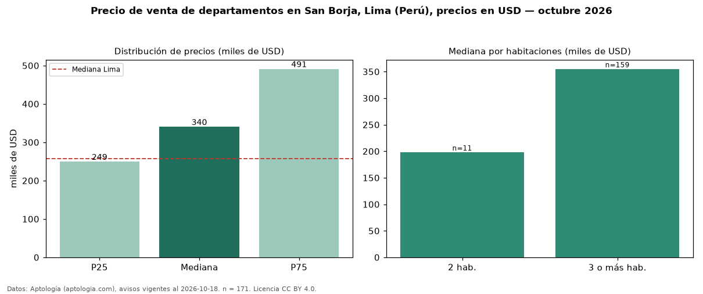

Precio de venta de departamentos en San Borja, Lima (Perú), precios en USD — octubre 2026
Con 171 avisos vigentes, el precio mediano de departamentos en venta en San Borja, Lima (Perú) es USD 340.000. Eso es 32 % por encima de la mediana de Lima para departamentos (USD 258.023). Por metro cuadrado, la mediana es USD 2.107/m² (n = 167 avisos con área), 9 % por debajo de Lima (USD 2.305/m²). Por precio mediano es el puesto 2 de 18 distritos de Lima con al menos 30 avisos de departamentos en venta (USD): entre las más caras. El área mediana anunciada es 177 m². El segmento con más oferta es el de 3 o más habitaciones (159 avisos, mediana USD 355.000); pasar de 2 habitaciones a 3 o más habitaciones cambia la mediana +79 %. La cuota de mantenimiento o condominio mediana declarada es USD 550 al mes (n = 15). La mitad central de los avisos va de USD 249.300 a USD 490.962 (razón 2,0), una dispersión moderada. Datos: Aptología (aptologia.com), CC BY 4.0 — https://www.aptologia.com/pe/venta/lima/san-borja. Archivos: PDF, CSV con las cifras y gráfica PNG.

| Avisos únicos | 171 |
|---|---|
| Percentil 25 | COP 249.300 |
| Mediana | COP 340.000 |
| Percentil 75 | COP 490.962 |
| Mediana por m² | COP 2.107 |
Fuente: avisos vigentes de portales inmobiliarios recopilados por Aptología, deduplicados (mínimo 30 avisos únicos por celda). Precios pedidos, no cerrados. Fecha: 2026-10-18.